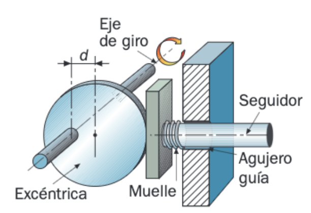
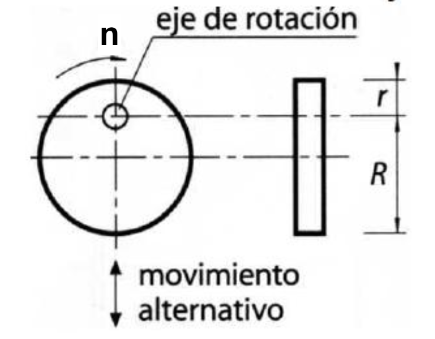
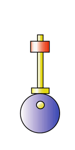

Excéntrica
Transforma el movimiento circular de un árbol en un movimiento alternativo rectilíneo de una pieza llamada seguidor.
Una excéntrica es un disco o cilindro cuyo eje de giro no coincide con su centro geométrico:

La distancia d, entre el centro del disco y el del eje recibe el nombre de excentricidad.
Además de la excentricidad, en una excéntrica se definen dos radios, medidos sobre la línea que une el centro de giro con el centro geométrico de la excéntrica:
- Radio mayor (R): distancia desde el centro de giro hasta el borde más lejano.
- Radio menor (r): distancia desde el centro de giro hasta el borde más cercano.

Como se puede deducir fácilmente del dibujo anterior, la excentricidad es:| \[d=\frac{R-r}{2}\] |
Este mecanismo es irreversible. Por consiguiente, el elemento motriz siempre será la rueda excéntrica y el elemento conducido el seguidor.

Las excéntricas producen en el seguidor un suave movimiento continuo, denominado movimiento armónico simple. Como puede comprobarse fácilmente, la amplitud de este movimiento será igual al doble de la excentricidad de la rueda excéntrica. Un caso especialmente importante de uso de las levas es en la apertura y cierre de válvulas en los motores de combustión interna de cuatro tiempos (lo veremos con más detalle el próximo curso). En este caso tenemos varias levas que giran en un mismo árbol, por lo que decimos que tenemos un
Un caso especialmente importante de uso de las levas es en la apertura y cierre de válvulas en los motores de combustión interna de cuatro tiempos (lo veremos con más detalle el próximo curso). En este caso tenemos varias levas que giran en un mismo árbol, por lo que decimos que tenemos un